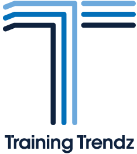

Rehab My Patient has teamed up with some great organisations that work with our vision, our code, and our customer service to provide allied healthcare practitioners with a great service.
The following software programmes are built into the RMP platform, making transition quick, easy and functional.
TBC
The following packages also complement our work:

www.trainingtrendz.com
Training Trendz is an on-line educational website for professionals and businesses in the fitness and allied health industries.
Our mission is to provide you with the latest training techniques, strategies and approaches for strength and conditioning, rehabilitation, wellness and business.
Therapy Advertising is an online Therapy Clinic directory allowing you to easily search for local Physiotherapists, Osteopaths, Chiropractors, Sports Therapists and Massage Therapists via your postcode - www.therapyadvertising.com. We (our team at RMP) are familiar with the directory, and have been using it for the last two or three years.